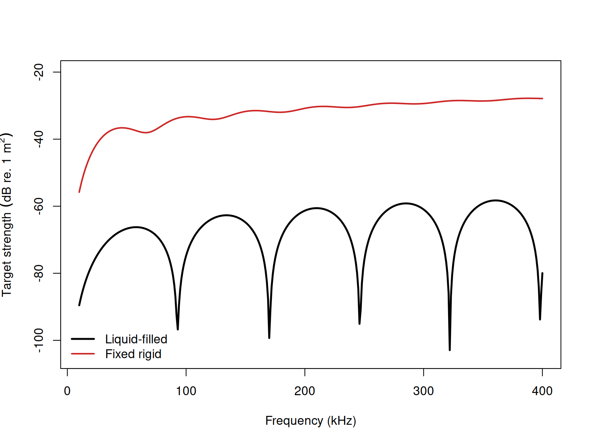

acousticTS implementation
Benchmarked Validated
Model-family pages: Overview Implementation Theory
These pages follow the finite-cylinder modal-series literature for straight circular cylinders near broadside (Stanton 1988, 1989).
The acousticTS package uses object-based scatterers, so the FCMS workflow follows the same broad pattern used elsewhere in the package: construct a geometry, attach the material properties needed for a cylindrical scatterer, evaluate target strength over the frequencies of interest, and then inspect how the result changes when the physically important assumptions are changed. For FCMS, the most important assumptions are usually the cylinder radius, cylinder length, orientation, and the boundary condition used to represent the cylinder interior.
The point of this implementation page is therefore not just to show which commands run. It is to show how the model is set up in a way that remains interpretable. A reader should be able to look at the input object and understand what geometric and material assumptions were actually passed into the FCMS calculation.
Cylinder object generation
library(acousticTS)
cylinder_shape <- cylinder(
length_body = 50e-3,
radius_body = 5e-3,
n_segments = 80
)
cylinder_object <- fls_generate(
shape = cylinder_shape,
density_body = 1045,
sound_speed_body = 1520,
theta_body = pi / 2
)
cylinder_object## FLS-object
## Fluid-like scatterer
## ID:UID
## Body dimensions:
## Length:0.05 m(n = 80 cylinders)
## Mean radius:0.005 m
## Max radius:0.005 m
## Shape parameters:
## Defined shape:Cylinder
## L/a ratio:10
## Taper order:N/A
## Material properties:
## Density: 1045 kg m^-3 | Sound speed: 1520 m s^-1
## Body orientation (relative to transducer face/axis):1.571 radiansThe cylinder geometry is built first because the FCMS expects a
straight, constant-radius finite cylinder. That means the shape object
is not a generic placeholder. It is the part of the workflow that states
the physical idealization being used: a body of length
length_body, radius radius_body, and a
discretization fine enough to represent that idealized cylinder cleanly
in later inspection and plotting steps.
The scatterer object then adds the material description. For a
fluid-filled cylinder, density_body and
sound_speed_body define the interior fluid properties,
while theta_body defines the cylinder orientation relative
to the incident field. In practice, this orientation parameter is often
just as important as the material contrasts because the FCMS separates
cross-sectional scattering from axial coherence. Changing the
orientation changes the argument of both the transverse size parameter
and the longitudinal coherence factor.
Calculating a TS-frequency spectrum
frequency <- seq(38e3, 150e3, by = 8e3)
cylinder_object <- target_strength(
object = cylinder_object,
frequency = frequency,
model = "fcms",
boundary = "liquid_filled"
)This call evaluates the FCMS over a discrete frequency grid. The frequency sequence should be chosen with the interpretation in mind. A coarse grid may be adequate for broad trends, but it can miss modal structure or oscillatory interference if the spectrum varies rapidly. For cylinders, that matters most when the acoustic size grows and more cylindrical orders contribute meaningfully to the modal sum.
The boundary argument is also part of the model
definition, not a cosmetic option. A liquid_filled boundary
says that pressure and normal velocity are matched across a fluid-fluid
interface. A fixed_rigid boundary says that normal motion
is suppressed. A pressure_release boundary says that total
pressure vanishes at the surface. Those alternatives often produce
qualitatively different spectra, so boundary choice should be tied to
the actual physical interpretation of the target.
Extracting model results
Model results can be extracted either visually or directly through
extract().
Accessing results
## frequency f_bs sigma_bs TS
## 1 38000 -0.0003505136+4.936752e-06i 0.0003505484 -69.10504
## 2 46000 -0.0004333017+9.047585e-06i 0.0004333961 -67.26230
## 3 54000 -0.0004806581+1.410163e-05i 0.0004808649 -66.35954
## 4 62000 -0.0004799232+1.916460e-05i 0.0004803057 -66.36965
## 5 70000 -0.0004244122+2.286433e-05i 0.0004250276 -67.43166
## 6 78000 -0.0003144932+2.364618e-05i 0.0003153809 -70.02329At this stage, it is worth checking more than whether the model ran.
Readers should confirm that the returned frequencies match the requested
grid, that the target-strength values vary over a plausible range for
the assumed cylinder, and that the results are being interpreted in the
intended domain. FCMS output is often discussed in TS, but
the underlying backscattering physics lives in the linear amplitude and
cross-section quantities from which TS is derived.
Comparison workflows
Boundary conditions

This comparison is useful because it isolates one of the most consequential FCMS decisions. Holding the geometry fixed and changing the boundary condition shows how much of the response is being driven by the circular shape itself and how much is being driven by the assumed interface physics. If two boundary choices produce materially different spectra, then the physical interpretation of the target interior is a first-order modeling decision rather than a minor sensitivity check.
For practical FCMS work, the first additional controls to revisit are usually:
- the boundary choice, because it changes the modal coefficient equations themselves,
- the orientation angle
theta_body, because it changes both transverse scattering strength and axial coherence, and - the modal truncation limit
m_limit, because larger acoustic size requires more retained cylindrical orders for stable convergence.
Those checks are especially important when comparing FCMS with other models. A fair comparison should keep the cylinder geometry, orientation convention, medium properties, and reporting domain consistent before any disagreement is interpreted as a model effect.
Benchmark comparisons
FCMS can also be compared directly against the Jech cylindrical
benchmark family stored in benchmark_ts. The table below
uses the full cylindrical benchmark grid. Elapsed times are
representative values from the current machine.
| Boundary | Max abs. delta TS (dB) | Mean abs. delta TS (dB) | Elapsed (s) |
|---|---|---|---|
fixed_rigid |
0.19454 | 0.00914 | 0.01 |
pressure_release |
0.00780 | 0.00263 | 0.03 |
gas_filled |
0.00499 | 0.00245 | 0.05 |
liquid_filled |
0.11453 | 0.00512 | 0.05 |
The pressure-release and gas-filled cases remain very close to the benchmark family across the full frequency grid. The larger residuals are confined to the fixed-rigid and liquid-filled branches, where the finite-cylinder benchmark curves show somewhat deeper minima than the present implementation at a small number of frequencies.
Cross-software implementation checks
The same four cylindrical boundary definitions were also compared
directly against the locally available echoSMs
finite-cylinder implementation. This check serves a different purpose
from the benchmark table above. It asks whether the software
implementations agree with each other on the same finite-cylinder
problem, and whether the remaining benchmark residual is shared rather
than unique to acousticTS.
| Boundary | Mean abs. delta acousticTS vs echoSMs
(dB) |
Max abs. delta acousticTS vs echoSMs
(dB) |
Mean abs. delta echoSMs vs benchmark
(dB) |
Max abs. delta echoSMs vs benchmark
(dB) |
|---|---|---|---|---|
fixed_rigid |
7.14e-09 | 1.64e-07 | 0.00914 | 0.19454 |
pressure_release |
6.97e-09 | 1.59e-07 | 0.00263 | 0.00780 |
gas_filled |
6.96e-09 | 1.59e-07 | 0.00245 | 0.00499 |
liquid_filled |
4.36e-09 | 2.62e-07 | 0.00512 | 0.11453 |
The key point is that acousticTS and echoSMs collapse
onto the same FCMS spectra to practical machine precision across all
four boundary types. That means the larger fixed-rigid and liquid-filled
benchmark residuals reported above are shared against the benchmark
curve rather than being a disagreement between the two software
implementations.
The main additional numerical switch in FCMS is m_limit,
so the natural follow-up check is the same one used for SPHMS: hold the
liquid-filled benchmark definition fixed and inspect how strongly the
benchmark fit depends on a reduced modal cap.
| Boundary | m_limit |
Max abs. delta TS (dB) | Mean abs. delta TS (dB) | Elapsed (s) |
|---|---|---|---|---|
liquid_filled |
default rule | 0.11453 | 0.00512 | 0.05 |
liquid_filled |
20 |
0.12618 | 0.00547 | 0.09 |
liquid_filled |
10 |
43.09805 | 4.29035 | 0.01 |
That sensitivity check shows why the FCMS page does not need a large PSMS-style configuration matrix. The physically meaningful benchmark branches are the boundary conditions themselves. The extra argument is a modal truncation cap, and the benchmark comparison shows that it can be pushed somewhat, but not recklessly, before the cylindrical modal sum is no longer trustworthy.